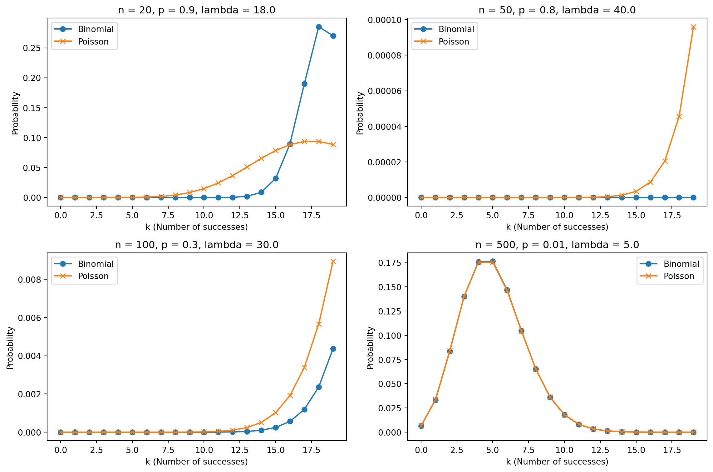
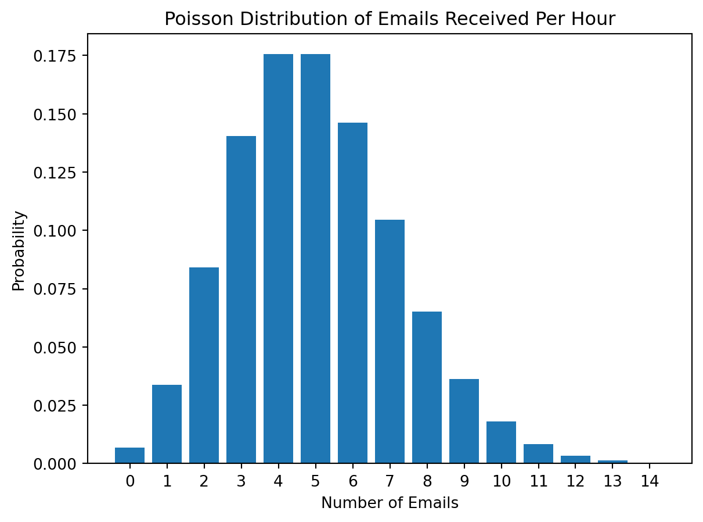
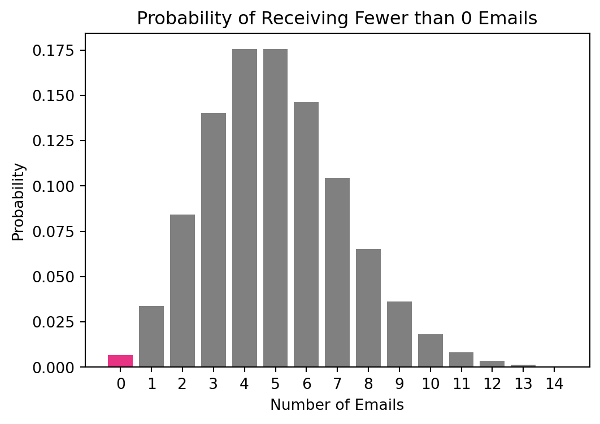
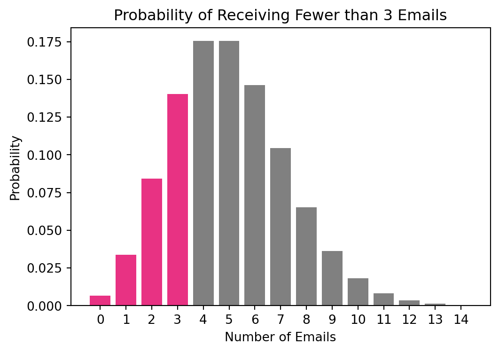
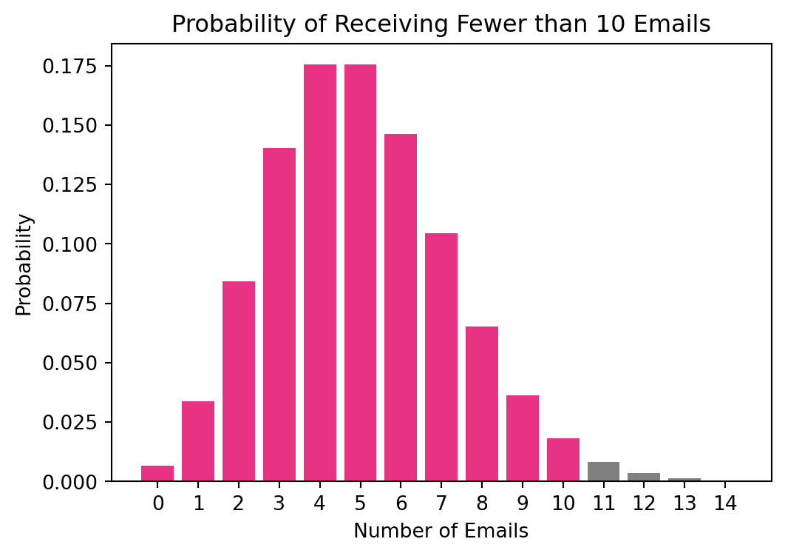
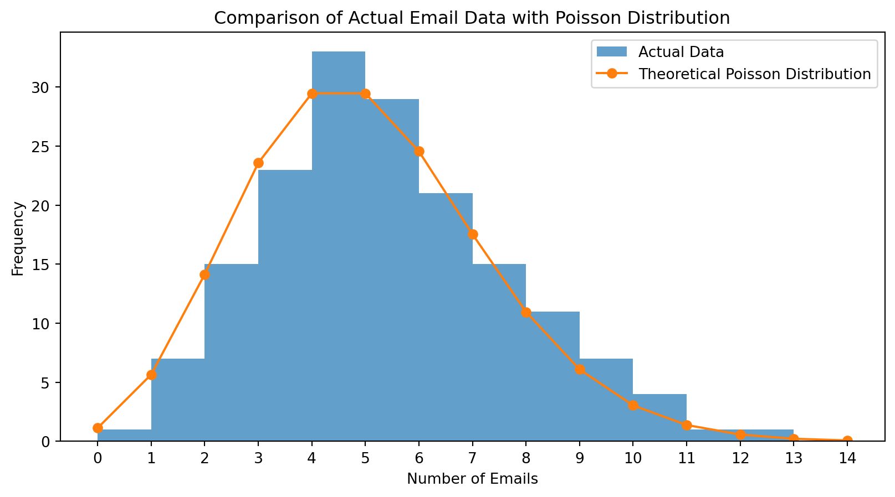

Probability Theory and Random Variables: Understanding the Poisson Distribution through Email Traffic Analysis
Understanding the Binomial Distribution
The Binomial distribution is a cornerstone of probability theory, serving as a foundation for more complex distributions, including the Poisson distribution. This section aims to clarify the basics of the Binomial distribution.
What is the Binomial Distribution?
The Binomial distribution is a probability distribution that models the number of successes in a fixed number of independent trials, with each trial having the same probability of success. It is particularly useful in scenarios with two possible outcomes, often labeled as “success” and “failure.”
Key Elements of the Binomial Distribution
Number of Trials (\(n\)): This denotes the total number of independent trials or experiments.
Probability of Success (\(p\)): The probability of achieving a successful outcome in an individual trial.
Number of Successes (\(k\)): The specific count of successful outcomes we are interested in.
The Binomial Formula
The probability of observing exactly \(k\) successes in \(n\) trials is described by the Binomial formula: \[ P(X = k) = \binom{n}{k} p^k (1 - p)^{n - k} \] Here, \(\binom{n}{k}\) (pronounced “n choose k”) represents the number of ways to select \(k\) successes from \(n\) trials.
A Practical Example
Consider a scenario where you flip a coin 10 times. What is the probability of flipping exactly 4 heads? In this example: - \(n = 10\) (the total number of coin flips), - \(p = 0.5\) (the probability of flipping heads on any single coin flip), - \(k = 4\) (the number of heads we are trying to achieve).
Using the Binomial formula, the probability is: \[ P(X = 4) = \binom{10}{4} (0.5)^4 (1 - 0.5)^{10 - 4} \]
Importance of the Binomial Distribution
The Binomial distribution is crucial in understanding binary outcomes across various fields such as psychology, medicine, and quality control. It provides a framework for scenarios with fixed trial numbers and clear success/failure outcomes. However, for large-scale or continuous-event contexts, the Poisson distribution becomes more relevant, as we will explore in subsequent sections.
Transitioning to the Poisson Distribution
In this section, we explore the intriguing relationship between the Binomial and Poisson distributions and how one transitions into the other under certain conditions. This transition is particularly important in scenarios involving a large number of trials and a small probability of success.
Conceptual Bridge
The Binomial distribution effectively models situations with a fixed number of independent trials and a constant probability of success in each trial. However, when we consider scenarios where the number of trials (\(n\)) is very large, and the probability of success in each trial (\(p\)) is very small, the Binomial distribution becomes less practical for calculations. This is where the Poisson distribution becomes relevant.
The key to this transition lies in the product of \(n\) and \(p\). As \(n\) becomes larger and \(p\) smaller, while their product \(np\) (representing the average number of successes) remains constant, the Binomial distribution approaches the Poisson distribution. This constant product, \(np\), is what we denote as \(\lambda\) in the Poisson distribution.
Poisson Formula
The formula for the Poisson distribution is as follows: \[ P(X = k) = \frac{\lambda^k e^{-\lambda}}{k!} \] In this equation, \(X\) is the random variable representing the number of successes, \(k\) is the specific number of successes we are interested in, \(\lambda\) is the average rate of success, \(e\) is the base of the natural logarithm, and \(k!\) is the factorial of \(k\).
Visualizing the Transition: A Jupyter Notebook Example
To further our understanding of the transition from the Binomial to the Poisson distribution, visual aids can be immensely helpful. In this section, we will use a series of graphs to illustrate how the Binomial distribution morphs into the Poisson distribution as the number of trials increases and the probability of success decreases.
Importing Libraries First, we install and import the necessary Python libraries for our calculations and visualizations.
Defaulting to user installation because normal site-packages is not writeable
Requirement already satisfied: numpy in /Users/zimingfang/Library/Python/3.9/lib/python/site-packages (1.26.2)
WARNING: You are using pip version 21.2.4; however, version 23.3.1 is available.
You should consider upgrading via the '/Library/Developer/CommandLineTools/usr/bin/python3 -m pip install --upgrade pip' command.
Defaulting to user installation because normal site-packages is not writeable
Requirement already satisfied: matplotlib in /Users/zimingfang/Library/Python/3.9/lib/python/site-packages (3.8.2)
Requirement already satisfied: fonttools>=4.22.0 in /Users/zimingfang/Library/Python/3.9/lib/python/site-packages (from matplotlib) (4.45.1)
Requirement already satisfied: kiwisolver>=1.3.1 in /Users/zimingfang/Library/Python/3.9/lib/python/site-packages (from matplotlib) (1.4.5)
Requirement already satisfied: cycler>=0.10 in /Users/zimingfang/Library/Python/3.9/lib/python/site-packages (from matplotlib) (0.12.1)
Requirement already satisfied: importlib-resources>=3.2.0 in /Users/zimingfang/Library/Python/3.9/lib/python/site-packages (from matplotlib) (6.1.1)
Requirement already satisfied: contourpy>=1.0.1 in /Users/zimingfang/Library/Python/3.9/lib/python/site-packages (from matplotlib) (1.2.0)
Requirement already satisfied: python-dateutil>=2.7 in /Users/zimingfang/Library/Python/3.9/lib/python/site-packages (from matplotlib) (2.8.2)
Requirement already satisfied: pyparsing>=2.3.1 in /Users/zimingfang/Library/Python/3.9/lib/python/site-packages (from matplotlib) (3.1.1)
Requirement already satisfied: pillow>=8 in /Users/zimingfang/Library/Python/3.9/lib/python/site-packages (from matplotlib) (10.1.0)
Requirement already satisfied: numpy<2,>=1.21 in /Users/zimingfang/Library/Python/3.9/lib/python/site-packages (from matplotlib) (1.26.2)
Requirement already satisfied: packaging>=20.0 in /Users/zimingfang/Library/Python/3.9/lib/python/site-packages (from matplotlib) (23.2)
Requirement already satisfied: zipp>=3.1.0 in /Users/zimingfang/Library/Python/3.9/lib/python/site-packages (from importlib-resources>=3.2.0->matplotlib) (3.17.0)
Requirement already satisfied: six>=1.5 in /Library/Developer/CommandLineTools/Library/Frameworks/Python3.framework/Versions/3.9/lib/python3.9/site-packages (from python-dateutil>=2.7->matplotlib) (1.15.0)
WARNING: You are using pip version 21.2.4; however, version 23.3.1 is available.
You should consider upgrading via the '/Library/Developer/CommandLineTools/usr/bin/python3 -m pip install --upgrade pip' command.
Defaulting to user installation because normal site-packages is not writeable
Requirement already satisfied: scipy in /Users/zimingfang/Library/Python/3.9/lib/python/site-packages (1.11.4)
Requirement already satisfied: numpy<1.28.0,>=1.21.6 in /Users/zimingfang/Library/Python/3.9/lib/python/site-packages (from scipy) (1.26.2)
WARNING: You are using pip version 21.2.4; however, version 23.3.1 is available.
You should consider upgrading via the '/Library/Developer/CommandLineTools/usr/bin/python3 -m pip install --upgrade pip' command.
Setting Parameters for the Distributions We define a range of \(n\) values to show how increasing the number of trials and decreasing the probability of success in each trial impacts the distribution. We also set a constant value for \(p\), the probability of success, and choose a value for \(k\), the number of successes we’re interested in.
n_values = [20, 50, 100, 500] # Increasing number of trialsp_values = [0.9, 0.8, 0.3, 0.01] # Decreasing number of trialsk =5# Number of successes
Calculating and Plotting the Distributions For each value of \(n\), we calculate the probabilities using both the Binomial and Poisson distributions and plot them for comparison.
plt.figure(figsize=(12, 8))for i, n inenumerate(n_values): lambda_ = n * p_values[i] x = np.arange(0, 20) binom_pmf = binom.pmf(x, n, p_values[i]) poisson_pmf = poisson.pmf(x, lambda_) plt.subplot(2, 2, i+1) plt.plot(x, binom_pmf, 'o-', label="Binomial") plt.plot(x, poisson_pmf, 'x-', label="Poisson") plt.title(f'n = {n}, p = {p_values[i]}, lambda = {lambda_}') plt.xlabel('k (Number of successes)') plt.ylabel('Probability') plt.legend()plt.tight_layout()plt.show()

Interpretation of Graphs
Shifting Shapes: As \(n\) increases and \(p\) decreases, we observe that the shape of the Binomial distribution starts resembling that of the Poisson distribution. Initially, for smaller values of \(n\), the Binomial distribution might appear distinctly different. However, as \(n\) grows, the graphs showcase a closer alignment between the two distributions.
Convergence to Poisson: The convergence of the Binomial distribution to the Poisson distribution is evident in these plots. The Poisson distribution begins to effectively approximate the Binomial distribution, especially as the product \(np\) (or \(\lambda\)) remains constant.
Practical Implications: This visual demonstration is crucial for understanding how the Poisson distribution can be used in real-life scenarios where the Binomial distribution is impractical due to a large number of trials. It highlights the flexibility and applicability of the Poisson distribution in various fields, from telecommunications to natural event modeling.
Real-World Application - Emails Per Hour
Now that we have a foundational understanding of the Poisson distribution and its relationship with the Binomial distribution, let’s apply this knowledge to a practical scenario: the number of emails received per hour. This real-world example will illustrate how the Poisson distribution is used to model and understand everyday phenomena.
Setting the Scene
Consider a situation where you’re monitoring the number of emails received in your office inbox. After some observation, you determine that, on average, you receive 5 emails per hour. In the context of the Poisson distribution, this average rate, 5 emails per hour, is our \(\lambda\) (lambda).
Calculating Probabilities
To understand how the Poisson distribution works in this scenario, we will calculate the probabilities of receiving exactly 3, 5, or 10 emails in an hour. We’ll use Python to perform these calculations.
Defining the Average Rate (\(\lambda\)) Our average rate \(\lambda\) is 5 emails per hour.
lambda_ =5# Average number of emails per hour
Calculating Probabilities We calculate the probability for receiving 3, 5, and 10 emails respectively.
probs = {}for k in [0, 3, 5, 10, 15]: probs[k] = poisson.pmf(k, lambda_)
Interpreting the Results Let’s print out the probabilities.
for k, prob in probs.items():print(f"Probability of receiving exactly {k} emails: {prob:.4f}")
Probability of receiving exactly 0 emails: 0.0067
Probability of receiving exactly 3 emails: 0.1404
Probability of receiving exactly 5 emails: 0.1755
Probability of receiving exactly 10 emails: 0.0181
Probability of receiving exactly 15 emails: 0.0002
Graphing Email Probabilities
Now, we’ll graph the Poisson distribution for our email scenario to visualize these probabilities.
Setting Up the Plot We will create a plot that shows the probability of receiving a range of emails in an hour.
x = np.arange(0, 15) # Define the range of emailsy = poisson.pmf(x, lambda_)plt.bar(x, y)plt.title("Poisson Distribution of Emails Received Per Hour")plt.xlabel("Number of Emails")plt.ylabel("Probability")plt.xticks(x)plt.show()

Interpretation
Probability Results: The calculated probabilities provide insights into the likelihood of different email counts. For instance, if the probability of receiving exactly 10 emails is low, it could indicate an unusually busy hour if it happens.
Graphical Representation: The bar graph visually demonstrates the probabilities of different email counts per hour, emphasizing the most likely outcomes and showcasing the typical variance one might expect in their inbox.
Calculating Cumulative Probabilities
Next, just for fun, we will calculate and visualize the probability of receiving fewer than a certain number of emails per hour in case you want to know what’s the possibility of you need to handle less than 0, 3, 5, or 10 emails. For each threshold, we will calculate the cumulative probability of receiving less than that number of emails and visualize these probabilities using bar graphs with highlighted sections.
The cumulative probability for receiving fewer than a certain number of emails can be calculated using the cumulative distribution function (CDF) of the Poisson distribution.
Defining the Average Rate (\(\lambda\)) and Thresholds Our average rate, \(\lambda\), is still 5 emails per hour. We also define our thresholds.
lambda_ =5# Average number of emails per hourthresholds = [0, 3, 5, 10]
Calculating Cumulative Probabilities We calculate the cumulative probability for each threshold.
cdf_values = {}for threshold in thresholds: cdf_values[threshold] = poisson.cdf(threshold, lambda_)print(f"Probability of receiving less than {threshold} emails in an hour: {cdf_values[threshold]:.4f}")
Probability of receiving less than 0 emails in an hour: 0.0067
Probability of receiving less than 3 emails in an hour: 0.2650
Probability of receiving less than 5 emails in an hour: 0.6160
Probability of receiving less than 10 emails in an hour: 0.9863
Plotting the Probabilities
We will create a series of bar graphs to visually represent these probabilities. Each graph will highlight the bars representing the number of emails up to the threshold.
Setting Up the Plot We define the range for the number of emails.
x = np.arange(0, 15) # Define the range of emailsy = poisson.pmf(x, lambda_)
Creating and Coloring the Graphs We create a separate graph for each threshold, coloring the bars up to that threshold differently.
for threshold in thresholds: plt.figure(figsize=(6, 4)) plt.bar(x, y, color='grey') # Default color plt.bar(x[:threshold+1], y[:threshold+1], color='#E83283') # Highlight up to the threshold plt.title(f"Probability of Receiving Fewer than {threshold} Emails") plt.xlabel("Number of Emails") plt.ylabel("Probability") plt.xticks(x) plt.show()



Interpreting the Results
Understanding Cumulative Probabilities: These graphs provide a visual representation of the cumulative probability of receiving fewer than a certain number of emails. A higher highlighted area indicates a greater likelihood of receiving fewer emails than the specified threshold.
Practical Insights: Such visualizations can help individuals and businesses to anticipate and prepare for varying email volumes, thereby aiding in effective time management and resource allocation.
Deep Dive into the Email Example
Having applied the Poisson distribution to the scenario of receiving emails per hour, let’s delve deeper into how this analysis can be beneficial for businesses or individuals and attempt to compare our theoretical findings with actual data.
Further Analysis
Understanding the pattern of email arrivals using the Poisson distribution can have significant practical applications, particularly in business settings.
Workload Management: For individuals or teams managing large volumes of emails, understanding the likelihood of receiving a certain number of emails can help in planning their workload. If the probability of receiving a high number of emails at certain hours is more, one can allocate more resources or time to manage this influx.
Staffing in Customer Service: Customer service departments that rely heavily on email communication can use these predictions to staff their teams more efficiently. During hours predicted to have a higher volume of emails, more staff can be scheduled to ensure timely responses.
Predictive Analysis for Planning: Businesses can use this data for predictive analysis. If certain days or times are consistently seeing a higher volume of emails, this information can be used for strategic planning, such as launching marketing emails or scheduling maintenance activities.
Comparison with Actual Data
To demonstrate the practical application of our theoretical analysis, let’s compare the Poisson distribution with actual email data. For this example, we’ll assume a sample data set representing the number of emails received per hour over a week.
Generating Sample Data Let’s simulate some sample email data for this comparison.
np.random.seed(0) # For reproducibilitysample_data = np.random.poisson(lambda_, size=168) # Simulating for 7 days (24 hours each)
Comparison with Theoretical Distribution We will plot the actual data alongside our theoretical Poisson distribution.
plt.figure(figsize=(10, 5))plt.hist(sample_data, bins=range(15), alpha=0.7, label="Actual Data")plt.plot(x, y *168, 'o-', label="Theoretical Poisson Distribution") # 168 hours in a weekplt.title("Comparison of Actual Email Data with Poisson Distribution")plt.xlabel("Number of Emails")plt.ylabel("Frequency")plt.xticks(range(15))plt.legend()plt.show()

In the histogram generated above, the y-axis, labeled “Frequency,” represents the number of hours during the week when a specific number of emails were received.
Each bar in the histogram corresponds to a particular number of emails received per hour (shown on the x-axis). The height of each bar indicates how many hours in the simulated week had that exact count of emails.
For example, if one of the bars represents 4 emails and its height reaches up to 10 on the y-axis, this means that there were 10 hours in the simulated week during which exactly 4 emails were received. The y-axis in this context is a count of the number of occurrences of each email count per hour across the entire week.
To calculate and plot the theoretical poisson distribution, x is an array representing different possible email counts per hour. y is calculated using the Poisson probability mass function (pmf) for each count in x, given the average rate lambda_. This y represents the theoretical probability of each email count per hour according to the Poisson distribution. The values in y are then multiplied by 168 (the total number of hours in the week) to scale these probabilities to the same total time frame as the actual data. The result is plotted as a line plot with markers (‘o-’) overlaid on the histogram. This line represents the expected frequency of each email count per hour over a week according to the Poisson distribution.
Interpretation of Comparison
Alignment with Theoretical Model: If the actual data closely aligns with the theoretical Poisson distribution, it validates the use of this model for predicting email patterns.
Identifying Anomalies: Any significant deviations from the theoretical distribution might indicate anomalies or special events, prompting further investigation.
Real-World Relevance: This comparison underscores the relevance of the Poisson distribution in modeling real-world scenarios, providing a valuable tool for data-driven decision-making.
Conclusion
Throughout this exploration, we’ve uncovered the Poisson distribution’s powerful utility in analyzing and forecasting infrequent but regular events, exemplified by email reception rates. This transition from the Binomial distribution, as visually depicted, underscores the Poisson distribution’s efficiency in scenarios with numerous trials and low success probabilities. In professional domains such as customer service, IT, and communications, it aids in workload management and resource allocation, ensuring adaptability. Likewise, in personal life, it assists in time and expectation management. This journey through probability and statistics highlights the Poisson distribution’s practical significance as a tool for deciphering our world, revealing hidden patterns in daily events like email flows. Ultimately, it’s not just a formula but a perspective enriching our personal and professional toolkits.
Source Code
---title: "1\\. Probability Theory and Random Variables"author: "Joanna Fang"date: "2023-11-20"categories: [code, probability, email traffic]jupyter: python3format: html: toc: true code-block-bg: "#FFFFFF" code-block-border-left: "#E83283" code-tools: source: true toggle: false caption: none---# Probability Theory and Random Variables: Understanding the Poisson Distribution through Email Traffic Analysis {width="50%" fig-align="center"}## Understanding the Binomial DistributionThe Binomial distribution is a cornerstone of probability theory, serving as a foundation for more complex distributions, including the Poisson distribution. This section aims to clarify the basics of the Binomial distribution.#### What is the Binomial Distribution?The Binomial distribution is a probability distribution that models the number of successes in a fixed number of independent trials, with each trial having the same probability of success. It is particularly useful in scenarios with two possible outcomes, often labeled as "success" and "failure."#### Key Elements of the Binomial Distribution1. **Number of Trials ($n$):** This denotes the total number of independent trials or experiments.2. **Probability of Success ($p$):** The probability of achieving a successful outcome in an individual trial.3. **Number of Successes ($k$):** The specific count of successful outcomes we are interested in.#### The Binomial FormulaThe probability of observing exactly $k$ successes in $n$ trials is described by the Binomial formula:$$ P(X = k) = \binom{n}{k} p^k (1 - p)^{n - k} $$Here, $\binom{n}{k}$ (pronounced "n choose k") represents the number of ways to select $k$ successes from $n$ trials.#### A Practical ExampleConsider a scenario where you flip a coin 10 times. What is the probability of flipping exactly 4 heads? In this example:- $n = 10$ (the total number of coin flips),- $p = 0.5$ (the probability of flipping heads on any single coin flip),- $k = 4$ (the number of heads we are trying to achieve).Using the Binomial formula, the probability is:$$ P(X = 4) = \binom{10}{4} (0.5)^4 (1 - 0.5)^{10 - 4} $$#### Importance of the Binomial DistributionThe Binomial distribution is crucial in understanding binary outcomes across various fields such as psychology, medicine, and quality control. It provides a framework for scenarios with fixed trial numbers and clear success/failure outcomes. However, for large-scale or continuous-event contexts, the Poisson distribution becomes more relevant, as we will explore in subsequent sections.## Transitioning to the Poisson DistributionIn this section, we explore the intriguing relationship between the Binomial and Poisson distributions and how one transitions into the other under certain conditions. This transition is particularly important in scenarios involving a large number of trials and a small probability of success.#### **Conceptual Bridge**The Binomial distribution effectively models situations with a fixed number of independent trials and a constant probability of success in each trial. However, when we consider scenarios where the number of trials ($n$) is very large, and the probability of success in each trial ($p$) is very small, the Binomial distribution becomes less practical for calculations. This is where the Poisson distribution becomes relevant.The key to this transition lies in the product of $n$ and $p$. As $n$ becomes larger and $p$ smaller, while their product $np$ (representing the average number of successes) remains constant, the Binomial distribution approaches the Poisson distribution. This constant product, $np$, is what we denote as $\lambda$ in the Poisson distribution.#### **Poisson Formula**The formula for the Poisson distribution is as follows:$$ P(X = k) = \frac{\lambda^k e^{-\lambda}}{k!} $$In this equation, $X$ is the random variable representing the number of successes, $k$ is the specific number of successes we are interested in, $\lambda$ is the average rate of success, $e$ is the base of the natural logarithm, and $k!$ is the factorial of $k$.#### **Visualizing the Transition: A Jupyter Notebook Example**To further our understanding of the transition from the Binomial to the Poisson distribution, visual aids can be immensely helpful. In this section, we will use a series of graphs to illustrate how the Binomial distribution morphs into the Poisson distribution as the number of trials increases and the probability of success decreases.1. **Importing Libraries** First, we install and import the necessary Python libraries for our calculations and visualizations.```{python}import sys!{sys.executable} -m pip install numpy!{sys.executable} -m pip install matplotlib!{sys.executable} -m pip install scipyimport numpy as npimport matplotlib.pyplot as pltfrom scipy.stats import binom, poisson```2. **Setting Parameters for the Distributions** We define a range of $n$ values to show how increasing the number of trials and decreasing the probability of success in each trial impacts the distribution. We also set a constant value for $p$, the probability of success, and choose a value for $k$, the number of successes we're interested in.```{python} n_values = [20, 50, 100, 500] # Increasing number of trials p_values = [0.9, 0.8, 0.3, 0.01] # Decreasing number of trials k =5# Number of successes```3. **Calculating and Plotting the Distributions** For each value of $n$, we calculate the probabilities using both the Binomial and Poisson distributions and plot them for comparison.```{python} plt.figure(figsize=(12, 8))for i, n inenumerate(n_values): lambda_ = n * p_values[i] x = np.arange(0, 20) binom_pmf = binom.pmf(x, n, p_values[i]) poisson_pmf = poisson.pmf(x, lambda_) plt.subplot(2, 2, i+1) plt.plot(x, binom_pmf, 'o-', label="Binomial") plt.plot(x, poisson_pmf, 'x-', label="Poisson") plt.title(f'n = {n}, p = {p_values[i]}, lambda = {lambda_}') plt.xlabel('k (Number of successes)') plt.ylabel('Probability') plt.legend() plt.tight_layout() plt.show()```#### **Interpretation of Graphs**- **Shifting Shapes**: As $n$ increases and $p$ decreases, we observe that the shape of the Binomial distribution starts resembling that of the Poisson distribution. Initially, for smaller values of $n$, the Binomial distribution might appear distinctly different. However, as $n$ grows, the graphs showcase a closer alignment between the two distributions.- **Convergence to Poisson**: The convergence of the Binomial distribution to the Poisson distribution is evident in these plots. The Poisson distribution begins to effectively approximate the Binomial distribution, especially as the product $np$ (or $\lambda$) remains constant.- **Practical Implications**: This visual demonstration is crucial for understanding how the Poisson distribution can be used in real-life scenarios where the Binomial distribution is impractical due to a large number of trials. It highlights the flexibility and applicability of the Poisson distribution in various fields, from telecommunications to natural event modeling.## Real-World Application - Emails Per HourNow that we have a foundational understanding of the Poisson distribution and its relationship with the Binomial distribution, let's apply this knowledge to a practical scenario: the number of emails received per hour. This real-world example will illustrate how the Poisson distribution is used to model and understand everyday phenomena.#### **Setting the Scene**Consider a situation where you're monitoring the number of emails received in your office inbox. After some observation, you determine that, on average, you receive 5 emails per hour. In the context of the Poisson distribution, this average rate, 5 emails per hour, is our $\lambda$ (lambda). #### **Calculating Probabilities**To understand how the Poisson distribution works in this scenario, we will calculate the probabilities of receiving exactly 3, 5, or 10 emails in an hour. We'll use Python to perform these calculations.1. **Defining the Average Rate ($\lambda$)** Our average rate $\lambda$ is 5 emails per hour.```{python} lambda_ =5# Average number of emails per hour```2. **Calculating Probabilities** We calculate the probability for receiving 3, 5, and 10 emails respectively.```{python} probs = {}for k in [0, 3, 5, 10, 15]: probs[k] = poisson.pmf(k, lambda_)```3. **Interpreting the Results** Let's print out the probabilities.```{python}for k, prob in probs.items():print(f"Probability of receiving exactly {k} emails: {prob:.4f}")```#### **Graphing Email Probabilities**Now, we'll graph the Poisson distribution for our email scenario to visualize these probabilities.4. **Setting Up the Plot** We will create a plot that shows the probability of receiving a range of emails in an hour.```{python} x = np.arange(0, 15) # Define the range of emails y = poisson.pmf(x, lambda_) plt.bar(x, y) plt.title("Poisson Distribution of Emails Received Per Hour") plt.xlabel("Number of Emails") plt.ylabel("Probability") plt.xticks(x) plt.show()```#### **Interpretation**- **Probability Results**: The calculated probabilities provide insights into the likelihood of different email counts. For instance, if the probability of receiving exactly 10 emails is low, it could indicate an unusually busy hour if it happens.- **Graphical Representation**: The bar graph visually demonstrates the probabilities of different email counts per hour, emphasizing the most likely outcomes and showcasing the typical variance one might expect in their inbox.#### **Calculating Cumulative Probabilities**Next, just for fun, we will calculate and visualize the probability of receiving fewer than a certain number of emails per hour in case you want to know what's the possibility of you need to handle less than 0, 3, 5, or 10 emails. For each threshold, we will calculate the cumulative probability of receiving less than that number of emails and visualize these probabilities using bar graphs with highlighted sections.The cumulative probability for receiving fewer than a certain number of emails can be calculated using the cumulative distribution function (CDF) of the Poisson distribution. 5. **Defining the Average Rate ($\lambda$) and Thresholds** Our average rate, $\lambda$, is still 5 emails per hour. We also define our thresholds.```{python} lambda_ =5# Average number of emails per hour thresholds = [0, 3, 5, 10]```6. **Calculating Cumulative Probabilities** We calculate the cumulative probability for each threshold.```{python} cdf_values = {}for threshold in thresholds: cdf_values[threshold] = poisson.cdf(threshold, lambda_)print(f"Probability of receiving less than {threshold} emails in an hour: {cdf_values[threshold]:.4f}")```#### **Plotting the Probabilities**We will create a series of bar graphs to visually represent these probabilities. Each graph will highlight the bars representing the number of emails up to the threshold.7. **Setting Up the Plot** We define the range for the number of emails.```{python} x = np.arange(0, 15) # Define the range of emails y = poisson.pmf(x, lambda_)```8. **Creating and Coloring the Graphs** We create a separate graph for each threshold, coloring the bars up to that threshold differently.```{python}for threshold in thresholds: plt.figure(figsize=(6, 4)) plt.bar(x, y, color='grey') # Default color plt.bar(x[:threshold+1], y[:threshold+1], color='#E83283') # Highlight up to the threshold plt.title(f"Probability of Receiving Fewer than {threshold} Emails") plt.xlabel("Number of Emails") plt.ylabel("Probability") plt.xticks(x) plt.show()```#### **Interpreting the Results**- **Understanding Cumulative Probabilities**: These graphs provide a visual representation of the cumulative probability of receiving fewer than a certain number of emails. A higher highlighted area indicates a greater likelihood of receiving fewer emails than the specified threshold.- **Practical Insights**: Such visualizations can help individuals and businesses to anticipate and prepare for varying email volumes, thereby aiding in effective time management and resource allocation.## Deep Dive into the Email ExampleHaving applied the Poisson distribution to the scenario of receiving emails per hour, let's delve deeper into how this analysis can be beneficial for businesses or individuals and attempt to compare our theoretical findings with actual data.#### **Further Analysis**Understanding the pattern of email arrivals using the Poisson distribution can have significant practical applications, particularly in business settings.1. **Workload Management**: For individuals or teams managing large volumes of emails, understanding the likelihood of receiving a certain number of emails can help in planning their workload. If the probability of receiving a high number of emails at certain hours is more, one can allocate more resources or time to manage this influx.2. **Staffing in Customer Service**: Customer service departments that rely heavily on email communication can use these predictions to staff their teams more efficiently. During hours predicted to have a higher volume of emails, more staff can be scheduled to ensure timely responses.3. **Predictive Analysis for Planning**: Businesses can use this data for predictive analysis. If certain days or times are consistently seeing a higher volume of emails, this information can be used for strategic planning, such as launching marketing emails or scheduling maintenance activities.#### **Comparison with Actual Data**To demonstrate the practical application of our theoretical analysis, let's compare the Poisson distribution with actual email data. For this example, we'll assume a sample data set representing the number of emails received per hour over a week.1. **Generating Sample Data** Let's simulate some sample email data for this comparison.```{python} np.random.seed(0) # For reproducibility sample_data = np.random.poisson(lambda_, size=168) # Simulating for 7 days (24 hours each)```2. **Comparison with Theoretical Distribution** We will plot the actual data alongside our theoretical Poisson distribution.```{python} plt.figure(figsize=(10, 5)) plt.hist(sample_data, bins=range(15), alpha=0.7, label="Actual Data") plt.plot(x, y *168, 'o-', label="Theoretical Poisson Distribution") # 168 hours in a week plt.title("Comparison of Actual Email Data with Poisson Distribution") plt.xlabel("Number of Emails") plt.ylabel("Frequency") plt.xticks(range(15)) plt.legend() plt.show()``` In the histogram generated above, the y-axis, labeled "Frequency," represents the number of hours during the week when a specific number of emails were received. Each bar in the histogram corresponds to a particular number of emails received per hour (shown on the x-axis). The height of each bar indicates how many hours in the simulated week had that exact count of emails. For example, if one of the bars represents 4 emails and its height reaches up to 10 on the y-axis, this means that there were 10 hours in the simulated week during which exactly 4 emails were received. The y-axis in this context is a count of the number of occurrences of each email count per hour across the entire week. To calculate and plot the theoretical poisson distribution, x is an array representing different possible email counts per hour. y is calculated using the Poisson probability mass function (pmf) for each count in x, given the average rate lambda_. This y represents the theoretical probability of each email count per hour according to the Poisson distribution. The values in y are then multiplied by 168 (the total number of hours in the week) to scale these probabilities to the same total time frame as the actual data. The result is plotted as a line plot with markers ('o-') overlaid on the histogram. This line represents the expected frequency of each email count per hour over a week according to the Poisson distribution.#### **Interpretation of Comparison**- **Alignment with Theoretical Model**: If the actual data closely aligns with the theoretical Poisson distribution, it validates the use of this model for predicting email patterns.- **Identifying Anomalies**: Any significant deviations from the theoretical distribution might indicate anomalies or special events, prompting further investigation.- **Real-World Relevance**: This comparison underscores the relevance of the Poisson distribution in modeling real-world scenarios, providing a valuable tool for data-driven decision-making.## ConclusionThroughout this exploration, we've uncovered the Poisson distribution's powerful utility in analyzing and forecasting infrequent but regular events, exemplified by email reception rates. This transition from the Binomial distribution, as visually depicted, underscores the Poisson distribution's efficiency in scenarios with numerous trials and low success probabilities. In professional domains such as customer service, IT, and communications, it aids in workload management and resource allocation, ensuring adaptability. Likewise, in personal life, it assists in time and expectation management. This journey through probability and statistics highlights the Poisson distribution's practical significance as a tool for deciphering our world, revealing hidden patterns in daily events like email flows. Ultimately, it's not just a formula but a perspective enriching our personal and professional toolkits.## References - https://annisap.medium.com/probability-theory-in-machine-learning-an-example-with-exponential-distributions-585eed56d48c- https://towardsdatascience.com/understanding-random-variables-and-probability-distributions-1ed1daf2e66- https://jonathan-hui.medium.com/probability-in-machine-learning-deep-learning-a2acdd793f18- https://www.analyticsvidhya.com/blog/2021/04/probability-theory-basics-in-machine-learning/- https://machinelearningmastery.com/discrete-probability-distributions-for-machine-learning/- https://github.com/jonkrohn/ML-foundations/blob/master/notebooks/5-probability.ipynb- OpenAI. (2023). ChatGPT [Large language model]. https://chat.openai.com